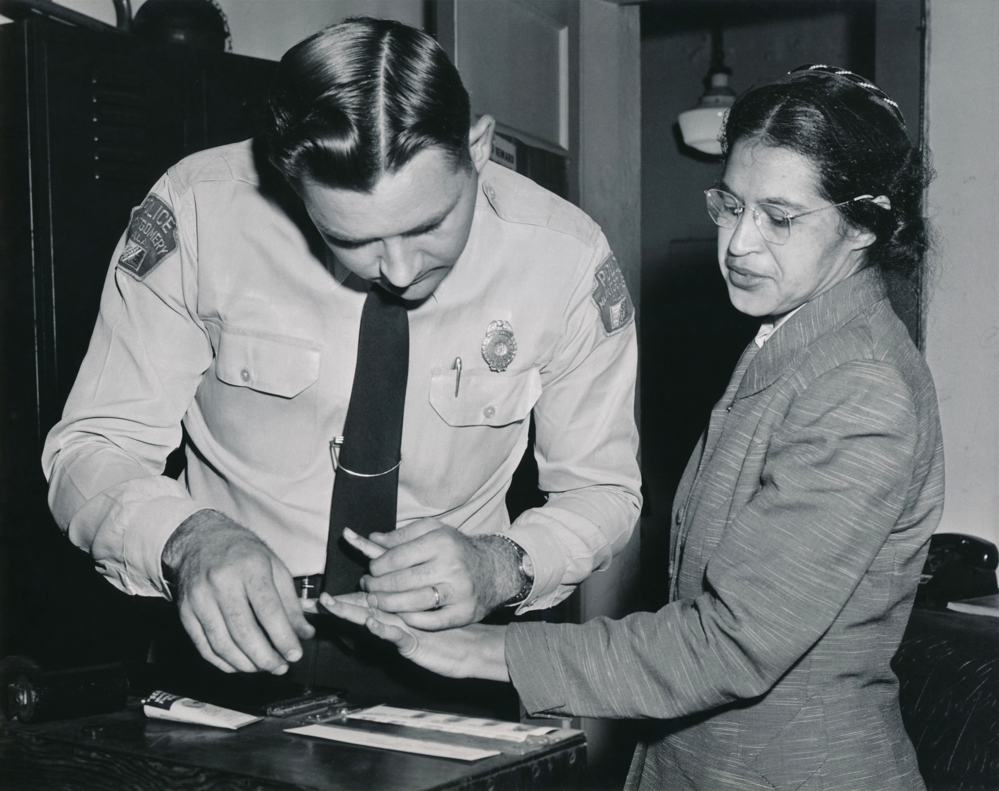

Name ______________________Date ______________Period __________
The Tactics Ledger: Montgomery and Little Rock
Directions: Your group has the tactics ledger. Each station holds one record from 1954 to 1957. For every record, enter the tactic or power it shows: boycott, witness, court order, troops, or defiance. Work through the five stations in order, then deliver the closing verdict in Part 2.
Part 1: Five Stations
Station 1: The Warning Letter, May 21, 1954
Source: Jo Ann Robinson, Letter to Mayor W. A. Gayle, May 21, 1954 (Historical Thinking Matters classroom edition). Audited TPSP bank record, jo-ann-robinson-letter-mayor-1954. Cuts are marked with ellipses in brackets.
Mayor Gayle, three-fourths of the riders of these public conveyances are Negroes. If Negroes did not patronize them, they could not possibly operate.
More and more of our people are already arranging with neighbors and friends to ride to keep from being insulted and humiliated by bus drivers.
There has been talk from twenty-five or more local organizations of planning a city-wide boycott of busses. We, sir, do not feel that forceful measures are necessary in bargaining for a convenience which is right for all bus passengers. [...]
Please consider this plea, and if possible, act favorably upon it, for even now plans are being made to ride less, or not at all, on our busses. We do not want this.
Tactic or power shown: ____________________________
Name the tactic this letter threatens, and state the fact Robinson gives that would make the tactic work. Quote her words for the fact.
Robinson wrote this letter in May 1954, a year and a half before Rosa Parks was arrested. What does the letter show about whether the boycott was spontaneous or prepared?
Station 2: A Diary of the Boycott, February 24, 1956
Source: Bayard Rustin, Montgomery Diary, February 24, 1956 (Reading Like a Historian classroom edition). Audited TPSP bank record, bayard-rustin-montgomery-diary-1956. The ellipses are in the bank record's text.
42,000 Negroes have not ridden the busses since December 5. ... The police began to harass, intimidate, and arrest Negro taxi drivers. ... It thus became necessary for the Negro leaders to find an alternative, the car pool. They set up 23 dispatch centers where people gather to wait for free transportation. ... Later Rufus Lewis, director of the car pool, introduced me to two men, one of whom has walked 7 miles and the other 14 miles, every day since December 5.

Rosa Parks being fingerprinted by Lieutenant D. H. Lackey, February 22, 1956, as one of the boycott leaders indicted that month. Gene Herrick for the Associated Press, public domain, via Wikimedia Commons.
Tactic or power shown: ____________________________
State the system that replaced the buses, with the numbers the diary gives for it: how many people were staying off the buses, and how many dispatch centers the replacement ran.
State the pressure the city was applying in this record, and state what the diary shows that pressure produced instead of surrender.
Station 3: The Photograph Record, September 1955 (Described, Not Shown)
Source: David Jackson, Jet magazine photographs of Emmett Till, September 1955 (Jet magazine; image described, no image reproduced). Audited TPSP bank record, emmett-till-jet-photographs-1955, carried in the Cold War era file. The passage below is the bank record's description of the photographs in full.
In September 1955, Jet magazine published photographs by David Jackson showing the open casket of Emmett Till, a fourteen-year-old lynched in Mississippi. Till's mother, Mamie Till-Mobley, insisted the world see what had been done to her son. The images shocked the nation and helped galvanize the civil rights movement.
The photographs themselves are not reproduced in this lesson. They are copyrighted magazine images, and this unit teaches them the way the bank record carries them, as a described record. Mamie Till-Mobley chose to publish them in 1955, and the choice, and its effect, can be studied from the description.
Tactic or power shown: ____________________________
State the choice Mamie Till-Mobley made, in the record's own terms, and state what she intended the choice to do.
The tactic at this station is witness. State what publishing the photographs accomplished, according to the record, that a private funeral would not have accomplished.
Station 4: The President's Address, September 24, 1957
Source: Dwight D. Eisenhower, Radio and Television Address to the American People on the Situation in Little Rock, September 24, 1957 (American Presidency Project). Audited TPSP bank record, eisenhower-little-rock-address-1957, carried in the Cold War era file. A cut is marked with an ellipsis in brackets.
In that city, under the leadership of demagogic extremists, disorderly mobs have deliberately prevented the carrying out of proper orders from a Federal Court. Local authorities have not eliminated that violent opposition and, under the law, I yesterday issued a Proclamation calling upon the mob to disperse. [...] Whenever normal agencies prove inadequate to the task and it becomes necessary for the Executive Branch of the Federal Government to use its powers and authority to uphold Federal Courts, the President's responsibility is inescapable. [...] Mob rule cannot be allowed to override the decisions of our courts.
Soldiers of the 101st Airborne Division escort Black students to Central High School, Little Rock, September 1957. United States Army photograph, courtesy of the National Archives, public domain, via Wikimedia Commons.
Tactic or power shown: ____________________________
State the ground Eisenhower claims for acting. Does he rest his action on support for integration, or on a duty he names? Quote the words that carry your answer.
State what local authority had failed to do, in Eisenhower's account, and what he says followed from that failure.
Station 5: The Governor Answers, and the Order, September 1957
Source: Orval Faubus, Statement on the Little Rock crisis, September 26, 1957 (Eyes on the Prize transcript, WGBH), and Dwight D. Eisenhower, Executive Order 10730, September 24, 1957 (Wikisource). Audited TPSP bank records, faubus-little-rock-statement-1957 and executive-order-10730-1957, carried in the Cold War era file. Cuts are marked with ellipses in brackets.
Faubus: [...] My fellow citizens, we are now an occupied territory. In the name of God, whom we all revere, in the name of liberty we hold so dear, in the name of decency, which we all cherish, what is happening in America? [...]
Executive Order 10730: [...] I hereby authorize and direct the Secretary of Defense to order into the active military service of the United States [...] any or all of the units of the National Guard of the United States and of the Air National Guard of the United States within the State of Arkansas to serve in the active military service of the United States for an indefinite period and until relieved by appropriate orders. [...] In furtherance of the enforcement of the aforementioned orders of the United States District Court for the Eastern District of Arkansas, the Secretary of Defense is authorized to use such of the armed forces of the United States as he may deem necessary.
Tactic or power shown: ____________________________
Set the two documents against each other. What does Faubus call the federal action, and what does the order actually authorize the Secretary of Defense to do?
State which document holds the power to decide what happens at Central High School, and quote the words that prove it.
Part 2: The Closing Verdict
Your group has entered five records in the ledger: a warning, a working boycott, an act of witness, a president's address, and a governor's defiance answered by an order. Now judge the ledger as a whole.
Moved the country most (station number and record): ____________________________
Moved the country least (station number and record): ____________________________
In a short paragraph, deliver your verdict. Name the record your group judges moved the country most, and defend the judgment from the documents: quote or name the evidence in that record, and state what changed because of it. Then name the record that moved the country least and say why its power was smaller.
Teacher Answer Key
Station 1: The Warning Letter
Tactic or power shown. Boycott, threatened in advance.
Name the tactic and the fact. The tactic is a citywide boycott of the buses. The fact that would make it work is Robinson's ridership figure, in her words: three-fourths of the riders of these public conveyances are Negroes, and if Negroes did not patronize them, they could not possibly operate. The buses depended on Black fares.
Spontaneous or prepared. Prepared. The letter is dated May 21, 1954, a year and a half before the arrest of Rosa Parks. It records a hearing already held in March 1954, three standing requests, riders already arranging to ride with neighbors, and talk from twenty-five or more local organizations of planning a boycott. The arrest of December 1, 1955 supplied the occasion. The organization and the plan predated it.
Station 2: A Diary of the Boycott
Tactic or power shown. Boycott, sustained by organization.
State the system and the numbers. The car pool replaced the buses. Rustin's diary gives 42,000 Black residents not riding since December 5 and 23 dispatch centers where people gathered to wait for free transportation. The diary also records men who had walked 7 miles and 14 miles every day since December 5.
State the pressure and what it produced. The police harassed, intimidated, and arrested Black taxi drivers, the boycott's first transport system. The pressure produced a larger and more organized replacement rather than surrender: the car pool with its dispatch centers, run by the movement's own association. The photograph at this station belongs to the same pressure campaign. Rosa Parks was fingerprinted on February 22, 1956 as one of the boycott leaders indicted that month.
Station 3: The Photograph Record
Tactic or power shown. Witness.
State the choice and its intent. Mamie Till-Mobley held an open-casket funeral and insisted that Jet publish David Jackson's photographs. In the record's words, she insisted the world see what had been done to her son. The intent was exposure: to put the evidence of the killing before people who would never enter the Mississippi courtroom that acquitted the men charged.
State what publishing accomplished. The record states that the images shocked the nation and helped galvanize the civil rights movement. A private funeral would have confined the knowledge to the family and the community that already knew. Publication carried the evidence to readers across the country, including the generation that would run the campaigns of the next decade. Note for the teacher: the photographs are copyrighted magazine images and are not reproduced in any document of this unit. Students work from the bank record's description, as the station states on its face.
Station 4: The President's Address
Tactic or power shown. Court order, backed by federal authority.
State the ground Eisenhower claims. A duty, not an endorsement of integration. Eisenhower rests his action on the responsibility of the Executive Branch to uphold Federal Courts: the President's responsibility is inescapable, and mob rule cannot be allowed to override the decisions of our courts. He had never publicly endorsed Brown, and the address does not ask the nation to agree with the ruling. It asks the nation to accept that a court order defied by a mob and a governor will be enforced.
State the local failure and what followed. Local authorities had not eliminated the violent opposition, and disorderly mobs had prevented the carrying out of proper orders from a Federal Court. From that failure, by his account, followed his proclamation calling on the mob to disperse and then the use of federal power, Executive Order 10730 and the troops of the 101st Airborne Division.
Station 5: The Governor Answers, and the Order
Tactic or power shown. Defiance, in Faubus's statement; troops, in the order.
Set the two documents against each other. Faubus calls Arkansas an occupied territory and appeals to God, liberty, and decency against the federal action. The order authorizes the Secretary of Defense to call the Arkansas National Guard into federal service for an indefinite period and to use such of the armed forces of the United States as he may deem necessary to enforce the district court's orders. The statement describes an invasion. The order performs a transfer of command.
State which document holds the power. The order. Its words authorize and direct the Secretary of Defense, place the Guard under federal command until relieved by appropriate orders, and extend to any armed forces the Secretary deems necessary. Faubus's statement commands no soldiers after September 24; the Guard he had posted at the school now answered to Washington. The nine students entered Central High under federal escort on September 25.
Part 2: The Closing Verdict (Grading Rubric)
Full credit answers will differ in their ranking. The strongest verdicts usually place Station 3 or Station 1 at the top: the Till record, because the record itself credits the images with shocking the nation and galvanizing the movement, or the Robinson letter, because the boycott it prepared became the movement's model campaign. Station 5's Faubus statement is the usual least choice, because after Executive Order 10730 it commanded no force and changed no outcome at Central High, though a student may argue Station 4's address moved least on its own, since the order and the troops did the work, and credit that reasoning when the documents carry it.
Full credit for the paragraph should be awarded if the student:
Names one record that moved the country most and one that moved it least, and keeps the paragraph on that comparison.
For the most judgment, quotes or names evidence inside the chosen record and states what changed because of it.
For the least judgment, identifies the limit inside the record itself, such as a threat not yet carried out, a statement without command behind it, or words that required an order to act.
Connects the verdict to the lesson question: how the boycott and the nine students taught the movement its methods, and how federal power was forced to act.